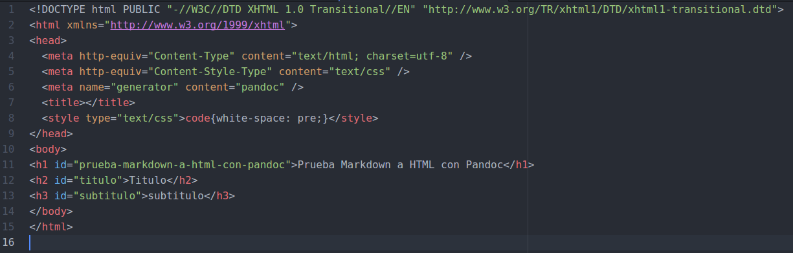

Capítulo 7: Pandoc
7.1 ¿Qué es Pandoc?
Pandoc es un conversor de documentos libre y de código abierto. Nos permitirá convertir ficheros escritos en un lenguaje de marcado como Markdown a HTML, ReStructuredText, LaTeX, OPML, Org-mode, DocBook, y Office Open XML (Microsoft Word .docx).
7.2 ¿Cómo instalar Pandoc?
Teniendo ya instalado Node.js, introducimos el siguiente código en la terminal.
sudo npm install node-pandoc --save
7.3 Ejemplo de uso de Pandoc
Creamos un archivo llamado prueba.md con el siguiente código markdown.
#Prueba Markdown a HTML con Pandoc
##Titulo
###subtitulo
Y escrbimos el siguiente código en la terminal
pandoc intro.md -f markdown -t html -s -o prueba.html
-f markdown para indicar que el fichero de origin está escrito en markdown.
-t html para indicar que la salida se escriba en HTML.
-s Para que la salida tenga un header y footer apropiado.
-o prueba.html para que se guarde en dicho fichero la salida.
El fichero de salidad contiene el siguiente código.

Y al abrir en el navegador se ve de la siguiente manera.